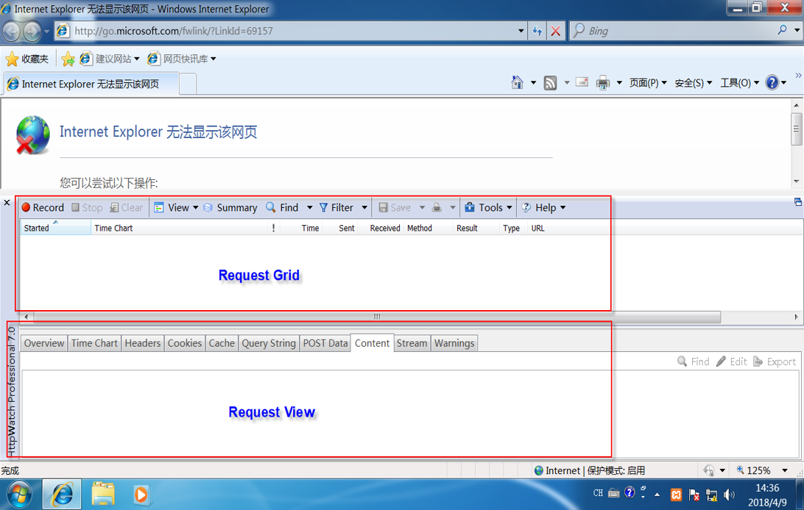
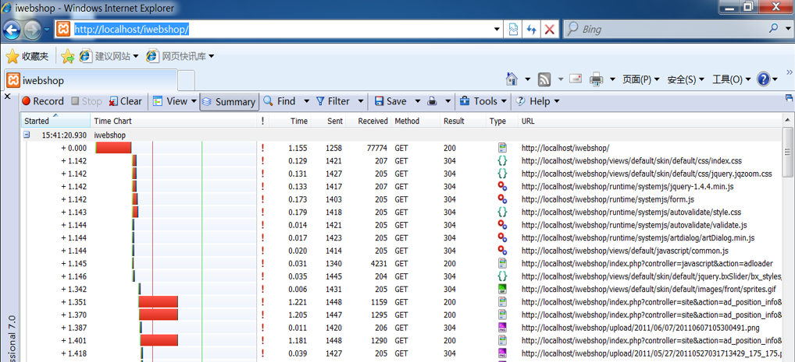
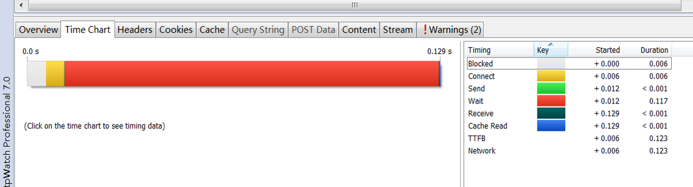

非功能测试---效率性
效率性
什么时候考虑？
用户量大、业务多的项目
关注点
访问项目时的时间
即浏览器发送一个请求到服务器，从服务器获取数据并解析显示完整的页面所耗费的时间。

- 资源利用率（暂不考虑）
使用工具HttpWatch
httpwatch安装：一路下一步即可
安装完成后在IE浏览器工具中可以看到httpwatch，或者点击【>>】按钮查看


Request Grid
点击Record开始录制， 点击Stop停止录制，点击Clear清除录制的数据。
以iwebshop为例录制如下：

Started：相对开始时间，是指接下来访问的URL相对于第一个URL被打开的时间，
比如http://localhost/iwebshop/views/default/skin/default/css/index.css的加载
是在http://localhost/iwebshop/1.142秒之后；
Time Chart：耗时比例图，即整个请求应答过程各部分所花时间比例图。
Time：请求所消耗的时间。
Sent：提交该请求所发送的字节数。
Received：提交请求后服务器返回的字节数。
Method：提交请求的方法。
Result：请求处理的结果。
Type：服务器返回内容的类型---text/html、image/gif、text/css
URL：请求的URL地址。
在测试过程中主要关注Time、Received、Result三项的值
Time是请求的耗时，需要注意耗时大的请求，
因为在整个业务响应时间过程中，耗时长的请求是最有可能需要调优的；
Received是返回的字节数，在测试过程中需要关注返回字节数较大的需要，
因为返回的字节数较大，会影响整个请求的耗时，它也是调优需要重点关注的内容；
Result是指请求响应的状态，需要关注其响应状态为非200的值，
请求响应状态只有200是正确的，其他的都是异常的，
如果请求出现异常情况，说明事务很有可能操作失败，这样直接影响了事务的成功率。
Request View
详细记录了每个请求的信息

主要是显示客户端发送的内容和服务器返回的内容。
左边显示的是客户端发送的内容，显示了数据流大小和发送到哪个服务器，
如图所示，发送的字节数为910个字节，服务器的IP地址为127.0.0.1，端口号为80。
右边显示的是服务器返回的内容，包括返回的字节数和返回到客户端的IP地址。
请求和响应
请求
请求行----左侧第一行数据
请求头---从第二行开始，到出现第一个空行为止，包含返回数据的语言、浏览器等。
请求实体---空行以后
注意：
一般GET请求没有请求实体，因为GET请求的信息在URL中就可以看到； 请求实体和请求头之间以空行隔开。
响应
响应行---右侧第一行数据
响应头---从第二行开始，到出现第一个空行为止，包括连接状态，服务器语言等。
响应实体---空行以后
注意：响应实体和响应头之间存在空行
如果发生了重定向，location后面跟的就是重定向的URL信息
Httpwatch查看时间效率
以首页搜索功能为例

显示了一次请求应答过程中每个时间片段所花费的时间。一次完整的请求应答过程需要经历的时间片段如下：Blocked-->DNS Lookup-->Connect --> Send -->Wait -->Receive。 各时间片段含义如下：
Blocked（阻塞）：阻塞的时间主要包括预处理时间（如缓存查找）和网络排队等待时间，
导致阻塞最主要原因是下载页面中的图片；
DNS Lookup（域名解释）：域名解释时间；
Connect（连接）：连接时间是指与web服务器建立起连接需要的时间；
Send（发送）：发送时间是指从客户端发送HTTP请求到服务器所花费的时间；
Wait（等待）：等待时间是指服务器响应请求的时间；
服务器接收请求的时间+服务器处理请求的时间+响应给客户端第一个数据的时间
Receive（接收）：接收时间是指服务器返回数据到客户端所花费的时间；
Cache Read（读cache）：读缓存时间是指从浏览器缓存中读取内容的时间；
TTFB---Connect+Send+Wait
NetWork--- Receive+TTFB